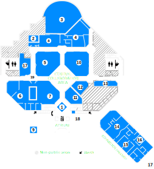
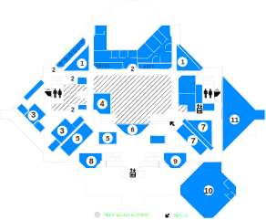
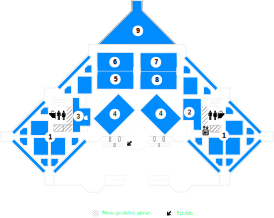
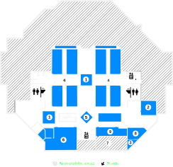

FLOORPLANS
FLOORPLANS
Click through to view floorplans.

FLOOR 1
Information Desk (Atrium)
EMS A
Video Studio (1356)
Audio Studio (1336)
UM3D Lab - Imaging and Support (1365)
UM3D Lab - Virtual Reality (1405)
UM3D Lab - Modeling and Animation Lab (1401)
EMS B
Mujo Cafe (Atrium)
Design Lab One (1321)
GroundWorks (1315)
CAEN Hotline (1315)
Multimedia Workrooms (1303-1309)
Videoconference Suite (1180)
Conference Rooms 2-4 (1116-1129)
Personal Studio
Gallery (1019)
ATM (TCF Bank) (Atrium)
Vending Machines

FLOOR 2
Computer Sites
Study/Interview Rooms
(2340-2353, 2360-2376, 2378-2388)
Books and Journals (NA-P) and
Microfilm
ImageWorks (2397)
Current Journals
Reserves Desk
Vizhub 3-13
Copiers, VCR, DVD, ErgoPod
Vizhub 1 & 2
Administration Suite (2161)
Millenium Project (2001)

FLOOR 3
Computer Sites
PC Cluster West (3320)
PC Cluster East (3404)
Books and Journals (A-N)
Windows Training Room 1 (3358 A/C)
Windows Training Room 2 (3358 B/D)
Windows Training Room 3 (3336)
Advanced Graphics & Media (Mac)
(3336 B/D)
USE Lab, Learning Technology
Incubation Lab, CTools Support (3350)

LOWER
LEVEL
Computer Sites
CAEN Office (B266)
Carillon Practice Room (B250)
Books and Journals (Q-Z)
Help Desk
Computer & Video Game Archive (B474)
Folio Storage (B247)
Sorting Area (B245)
Special Collections (B240)
Bootstrap Carousel
Information Desk
Information Desk staff can check out library materials and keys to training and conference rooms and answer questions about the Duderstadt Center's facilities and services.
EMS A
The Electronic Music Studios include two state-of-the art recording laboratories that facilitate a broad range of activities and research including: electronic music composition, recording experimentation, mixing audio to motion picture, scientific investigation and acoustics studies.
Video Studio
The Video Studio is a performance and studio space that suppports and extends the capabilities of the labs and studios throughout the Digital Media Commons.
Audio Studio
The Audio Studio is an audio laboratory set up in the style of a recording studio. The resources are intended to encourage experimentation and research, and develop skills and techniques in audio production.
UM3D LAB - Imaging and Support
The UM3D Lab provides access to the tools, expertise, and collaborative opportunities needed to support cutting edge research, academic initiatives, and innovative uses of technology.
UM3D LAB - Virtual Reality
Our most advanced audio-visual system for virtual reality provides its users with the convincing illusion of being fully immersed in a computer-generated three-dimensional world.
UM3D LAB - Modeling and Animation Lab
The UM3D Lab provides access to the tools, expertise, and collaborative opportunities needed to support cutting edge research, academic initiatives, and innovative uses of technology.
EMS B
The Electronic Music Studios include two state-of-the art recording laboratories that facilitate a broad range of activities and research including: electronic music composition, recording experimentation, mixing audio to motion picture, scientific investigation and acoustics studies.
Mujo Cafe
Mujo Café is operated by Michigan Dining and conveniently in the Duderstadt atrium.
Design Lab 1
Design Lab 1 hosts an academic community centered in making, with an emphasis on aesthetics.
Groundworks
Groundworks Media Lab is a collaborative facility that supports the production, conversion, and editing of digital and analog media.
CAEN Hotline
The CAEN Hotline is the College of Engineering's computing help desk located on North Campus.
Multimedia Workrooms
Our three Multimedia Workrooms are available to trained U-M students, faculty and staff any time that the Duderstadt Center is open, and provide access to video and audio editing applications, media conversion, DVD authoring, and image manipulation and compositing tools.
Videoconference Suite
Videoconferencing is available in Conference Rooms 2, 3 and 4, located just off the Connector Hall, between Pierpont Commons and the Duderstadt Center Atrium.
Conference Rooms 2-4
The Duderstadt Center has four conference rooms available for meetings, workshops, etc. These rooms are available to U-M groups for academic and student service purposes.
Personal Studio
The Personal Studio is an all-in-one solution for recording video presentations.
Gallery
The mission of the Gallery is to exhibit the widest range of creative talents from within the university.
ATM (TCF Bank)
A TCF Bank ATM is located in the Duderstadt Center.
Vending Machines
Vending machines are located conveniently near the Central Collaboration Area.
Computer Sites
The Art, Architecture & Engineering Library offers many publicly accessible Microsoft Windows workstations for guests to access the Library's extensive online services.
Study/Interview Rooms
Eighteen study rooms are located on the second floor and one group study room is located on the lower level of the Duderstadt Center for individual or small group study.
Books and Journals
These are available for use in the library and/or borrowing from the library.
Imageworks
Imageworks staff can help you find and work with digital images, slides, VHS tapes and DVDs. Imageworks is located at 2397 (2nd floor, East) of the Duderstadt Center.
Current Journals
These are available for use in the library and/or borrowing from the library.
Reserves Desk
AAEL Reserves is located at the 2nd Floor Service Desk in the Art, Architecture, & Engineering Library. Here you can find books and materials that have been placed on course reserve at AAEL for the semester, as well as the Permanent Reserves collection.
Vizhub 3-13
Reservations for the Duderstadt Center "Vizhub" stations are available between 8:00 a.m. and 12:00 midnight, seven days per week.
Copiers, VCR, DVD, ErgoPod
These are available for use in the library. ErgoPods were wheelchair-accessible workstations designed to accommodate users who need to sit, stand, recline or adjust for extended periods.
Vizhub 1 & 2
Reservations for the Duderstadt Center "Vizhub" stations are available between 8:00 a.m. and 12:00 midnight, seven days per week.
Administration Suite
Millenium Project
The Millennium Project is a research center at the University of Michigan concerned with the impact of technology on our society, our communities, our institutions, and our planet.
Computer Sites
The Art, Architecture & Engineering Library offers many publicly accessible Microsoft Windows workstations for guests to access the Library's extensive online services.
PC Cluster West
The Art, Architecture & Engineering Library offers many publicly accessible Microsoft Windows workstations for guests to access the Library's extensive online services.
PC Cluster East
The Art, Architecture & Engineering Library offers many publicly accessible Microsoft Windows workstations for guests to access the Library's extensive online services.
Books and Journals
These are available for use in the library and/or borrowing from the library.
Windows Training Room 1
The Duderstadt Center has four training rooms equipped specifically for the purpose of computer training.
Windows Training Room 2
The Duderstadt Center has four training rooms equipped specifically for the purpose of computer training.
Windows Training Room 3
The Duderstadt Center has four training rooms equipped specifically for the purpose of computer training.
Advanced Graphics and Media (Mac)
The Advanced Graphics & Media Macintosh Training Room is a 22-seat room focused on instruction in 3D modeling, animation, high-end graphics work, and digital media manipulation.
USE Lab, Learning Technology Incubation Lab, CTools Support
The Learning Technologies Incubation Group (LTIG) is interested in identifying emerging technologies that are being developed or applied by faculty and staff that improve the educational experience.
Computer Sites
The Art, Architecture & Engineering Library offers many publicly accessible Microsoft Windows workstations for guests to access the Library's extensive online services.
CAEN Office
The CAEN Business Office is available for all administrative inquiries, including financial, procurement and HR operations.
Carillon Practice Room
Books and Journals
These are available for use in the library and/or borrowing from the library.
Help Desk
Information Desk staff can check out library materials and keys to training and conference rooms and answer questions about the Duderstadt Center's facilities and services.
Computer and Video Game Archive
CVGA staff can help you find computer games, video games, and board games to play or study. The CVGA is located in the lower level of the Duderstadt Center.
Folio Storage
Because of their size, age, and/or condition, some books are kept in a storage space in the lower level.
Sorting Area
Special Collections
The Art, Architecture & Engineering Special Collection includes rare, fragile, and/or limited editions.